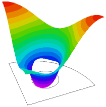

|
heat_boundary |

  
|
|
heat_boundary |
|
{ HEAT_BOUNDARY.PDE
This problem shows the use of natural boundary conditions to model
insulation, reflection, and convective losses.
The heatflow equation is
div(K*grad(Temp)) + Source = 0
The Natural boundary condition specifies the value of the surface-normal
component of the argument of the divergence operator, ie:
Natural Boundary Condition = normal <dot> K*grad(Temp)
Insulating boundaries and symmetry boundaries therefore require the
boundary condition:
Natural(Temp) = 0
At a convective boundary, the heat loss is proportional to the temperature
difference between the surface and the coolant. Since the heat flux is
F = -K*grad(Temp) = b*(Temp - Tcoolant)
the appropriate boundary condition is
Natural(Temp) = b*(Tcoolant - Temp).
In this problem, we define a quarter of a circle, with reflective
boundaries on the symmetry planes to model the full circle. There is a
uniform heat source of 4 units throughout the material. The outer
boundary is insulated, so the natural boundary condition is used to
specify no heat flow.
Centered in the quadrant is a cooling hole. The temperature of the
coolant is Tzero, and the heat loss to the coolant is (Tzero - Temp)
heat units per unit area.
In order to illustrate the characteristics of the Finite Element model,
we have selected output plots of the normal component of the heat flux
along the system boundaries. The F.E. method forms its equations based
on the weighted average of the deviation of the approximate solution
to the PDE over each cell. There is no guarantee that on the outer
boundary, for example, where the Natural(Temp) = 0, the point-by-point
value of the normal derivative will necessarily be zero. But the integral
of the PDE over each cell should be correct to within the requested
accuracy.
Here we have requested three solution stages, with successively tighter
accuracy requirements of 1e-3, 1e-4 and 1e-5.
Notice in plot 7 that while the pointwise values of the normal flux
oscillate by ten percent in the first stage, they oscillate about the
same solution as the later stages, and the integral of the heat loss is
2.628, 2.642 and 2.6395 for the three stages. Compare this with the
analytic integral of the source (2.6389) and with the numerical integral
of the source in plot 5 (all 2.6434). The Divergence Theorem is
therefore satisfied to 0.004, 0.001, and 0.0002 in the three stages.
In plot 7, "Integral" and "Bintegral" differ because they are the result
of different quadrature rules applied to the data.
}
title "Coolant Pipe Heatflow"
select stages = 3 errlim = staged(1e-3,1e-4,1e-5) autostage=off
variables Temp
definitions K = 1 { conductivity } source = 4 { source } Tzero = 0 { coolant temperature } flux = -K*grad(Temp) { thermal flux vector } initial values Temp = 0
equations Temp : div(K*grad(Temp)) + source = 0 |
 |
boundaries { define the problem domain }
Region 1 { ... only one region }
start "OUTER" (0,0) { start at the center }
natural(Temp)=0 { define the bottom symmetry boundary condition }
line to(1,0) { walk to the surface }
natural(Temp)=0 { define the "Zero Flow" boundary condition }
arc (center=0,0) to (0,1) { walk the outer arc }
natural(Temp)=0 { define the Left symmetry B.C. }
line to close { return to close }
start "INNER" (0.4,0.2) { define the excluded coolant hole }
natural(Temp)=Tzero-Temp { "Temperature-difference" flow boundary.
Negative value means negative K*grad(Temp)
or POSITIVE heatflow INTO coolant hole }
arc (center=0.4,0.4){ walk boundary CLOCKWISE for exclusion }
to (0.6,0.4)
to (0.4,0.6)
to (0.2,0.4)
to close
monitors
contour(Temp) { show contour plots of solution in progress }
plots { write these hardcopy files at completion: }
grid(x,y) { show the final grid }
contour(Temp) { show the solution }
surface(Temp)
vector(-K*dx(Temp),-K*dy(Temp)) as "Heat Flow"
contour(source) { show the source to compare integral }
elevation(normal(flux)) on "outer" range(-0.08,0.08)
report(bintegral(normal(flux),"outer")) as "bintegral"
elevation(normal(flux)) on "inner" range(1.95,2.3)
report(bintegral(normal(flux),"inner")) as "bintegral"
histories
history(bintegral(normal(flux),"inner"))
end
Page url: index.html?applications_heatflow_heat_boundary.html